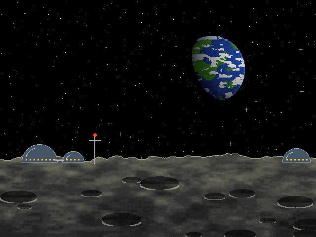
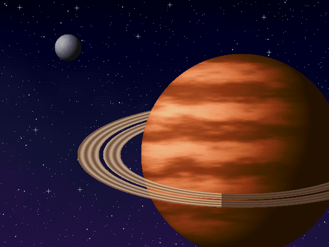
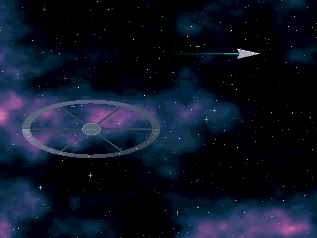
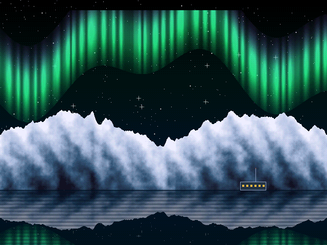
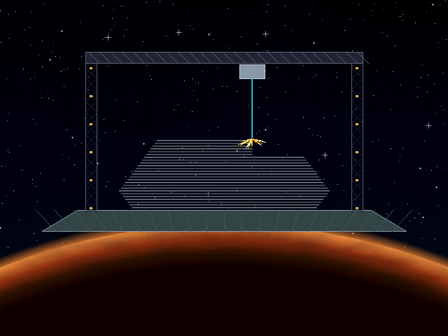
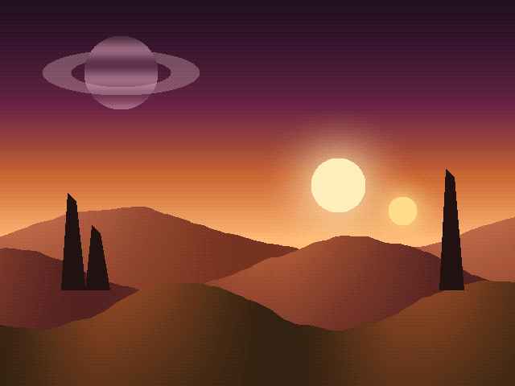
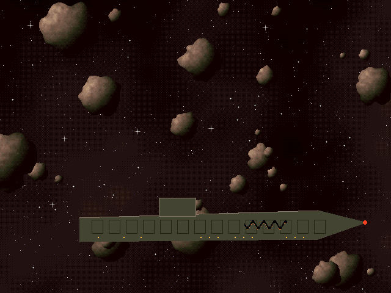
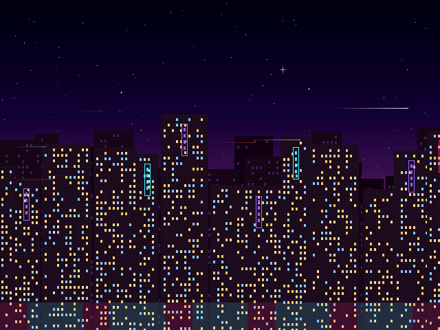
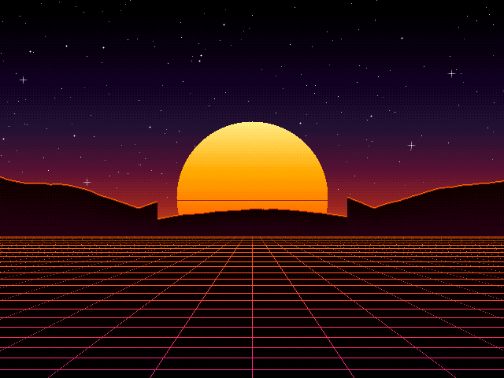
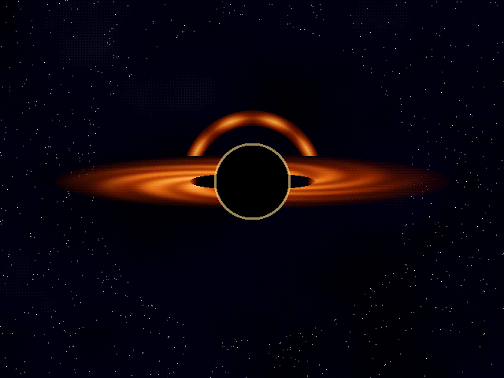

SCREEN TYPE 7 · 640×480 · RGB444 · 600 KB EACH
Ten jobs: one backdrop and one song each
Each job has its own picture and its own SID song, calmer at job 1 and more intense by job 10, as the speed rises. Drawn by a seeded generator, quantized to 12-bit colour with 4×4 ordered dither. Behind play they are dimmed to 75%; the job card shows each one whole first.
- One backdrop is 600 KB; two display buffers already take 1.2 MB of the card's 2 MB, so load each job's backdrop from the SD card at the job change (about a quarter of a second by DMA) while the job card shows.
- Draw it into both buffers once. Panels are opaque, so play never needs the backdrop again until the next job. Estimates until the new video plan lands.

JOB 01 · First Shift · Moonbase · synthpop, 116 BPM

JOB 02 · Warm-Up · Gas giant · French house, 120 BPM

JOB 03 · Conveyor · Orbital station · industrial, 122 BPM

JOB 04 · Night Shift · Ice planet · melancholic synth, 124 BPM

JOB 05 · Overclock · Orbital shipyard · robot rock, 126 BPM

JOB 06 · Hot Bed · Twin-sun desert · disco house, 128 BPM

JOB 07 · Toolpath · Derelict · dark arpeggio epic, 132 BPM

JOB 08 · Spindle Speed · Neon city · swung stomp, 136 BPM

JOB 09 · Thermal Runaway · Grid horizon (also the title) · acid, 142 BPM

JOB 10 · Max Feed Rate · Black hole · anthem, 150 BPM, and overtime